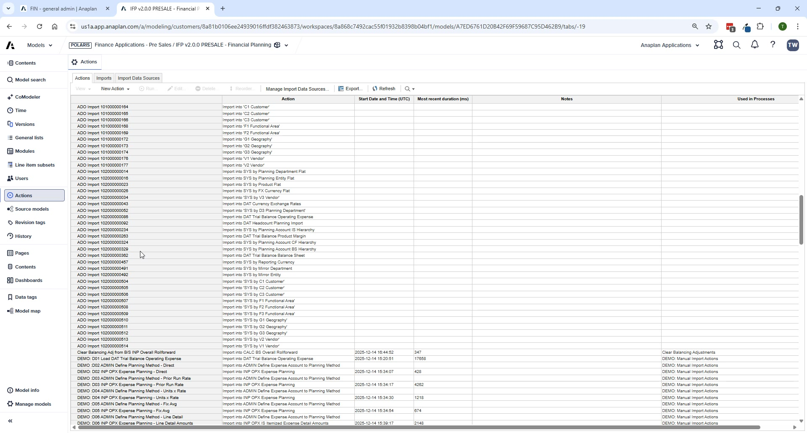

Data Load via ADO
Upload files, configure Admin mappings, build transformation views, and push to spoke models
Module 2Configuration Workshop45 min
⚠ ⚠ Fix Broken ADO Links First
Before building any pipelines, manually create: Vendor Hierarchy (FP), SYS by J2/J3/J4 Job (HC), and Job Grade (HC). These are known missing links and must exist before data can flow.
Step 1 — Upload Source Files to ADO
| File | Target Model | Load Type |
|---|---|---|
| IFP_DH_Source Account IS.csv | Admin | Direct load |
| IFP_DH_Source Account BS.csv | Admin | Direct load |
| IFP_DH_Source Entity.csv | Admin | Direct load |
| IFP_DH_Source Department.csv | Admin | Direct load |
| IFP_SH_FX Currency.csv | All spokes | Direct load |
| IFP_SH_FX_Rates.csv | All spokes | Direct load |
| IFP_FP_Trial Balance IS.csv | FP | Transformation load |
| IFP_HC_HRIS Actuals.csv | HC | Transformation load |
| IFP_CE_BS Subledger Trial Balance.csv | CE | Transformation load |
Step 2 — Configure Admin Model Mappings
- Push source data to Admin model via ADO
- Navigate to Administration → Source to Planning in the UX app
- Map all source departments → planning departments (goal: Unmapped KPI = 0)
- Map all source entities → planning entities
- Map all source IS accounts → planning IS accounts
- Map all source BS accounts → planning BS accounts
- Run "Create" actions to finalize the planning lists

💡 Set Default Mappings Button
Use 'Set Default Mappings' to quickly create 1:1 mappings for all unmapped items. Review and adjust any that need consolidation (multiple source codes → one planning code).
Step 3 — Build ADO Transformation Views for Actuals
- Open the trial balance source file in ADO Source Data
- Import mapping datasets from Admin model:
SYS by Source Account IS Flat,SYS by Source Dept Flat,SYS by Source Entity Flat - Create leaf-level transformation view from each (filter: Is Leaf Level = true)
- Create a transformation view from the source file; join each mapping view to add Planning codes
- Create final clean view keeping: Planning Account, Entity, Dept + Ending Balance (float) + Time Period (date)
- Enable aggregation → Apply
- Map to ADO link and push
Step 4 — Push to Spoke Models
- Re-sync Admin model source datasets in ADO (picks up new mappings)
- Push Planning Account IS/BS hierarchies to FP, HC, CE
- Push Planning Entity and Department hierarchies to FP, HC, CE
- Push FX rates and currencies to all spoke models
- Push actuals (Trial Balance IS, HRIS Actuals) to FP and HC
ℹ Load Order Matters
Always push hierarchies and master data before pushing actuals. Actuals loads will fail if planning lists aren't populated yet.
Step 5 — Validate Data Loads
- FIN – Validate Exchange Rates
- FIN – Validate Trial Balance IS Data
- FIN – Validate Trial Balance BS Data (if BS deployed)
- HC – Validate Actuals
- HC – Validate Exchange Rates
- CapEx – Validate Exchange Rates (if CE deployed)
- CapEx – Validate Trial Balance BS Subledger (if CE deployed)